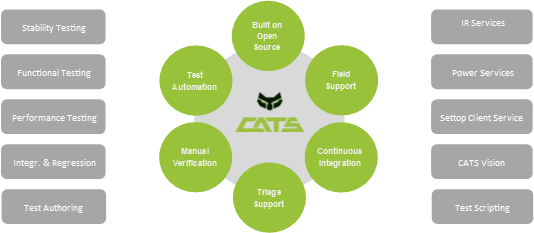

Welcome to CATS
Cable Automated Test Solution (CATS) is a pre-integrated software bundle that provides a common framework for validating customer-premises equipment (CPE) for functional testing and stability tests. The OCATS automation framework can be used by the broadcast community for improving the amount, type and quality of auto-mated testing. CATS focuses on manual and automated Set top usage through IR and Power Control used for video inspection.
Benefits
- Reducing the Length of Test & Development Cycles
- Shorten Time to Market
- Improve Overall Product Quality
Rack Purchasing
CATS recommends purchasing pre-built racks from Toner Cable
Reference Hardware
For a fully functional CATS installation the following devices are needed:
- IR emitter controller a.k.a. IR blaster
- Power/Reboot switch - network controllable
- IP Video Encoder
- Network switch
- PC/Server or VM (CentOS6/RHEL6 compatible)
Only one device in each category is needed.
Supported Devices
| Function | Vendor | Model | Ports | Cost | Comments |
|---|---|---|---|---|---|
| IR | Global Cache | iTach IP2IR | 3 | ~$100 | Small device |
| IR | Global Cache | iTach IP2IR(-P) | 3 | ~$130 | supports PoE (802.3af) |
| IR | Global Cache | GC-100-18R | 6 | ~$250 | rack version with six ports |
| Power | WTI | NPS-8HS20-1 | 8 | $760 | Expensive |
| Power | Synaccess | NP-0801DT | 8 | $350 | Cheaper |
| Video encoder | Axis | P7214 | 4 | $700 | supports PoE(802.3af) |
| Video encoder | Axis | P7216 | 16 | $1700 | newest model |
Network Switch
Any standard Ethernet network switch or router will work. The only assumption OCATS makes about the network: * The OCATS server can communicate with all the devices * The users can access the IP video encoder and the OCATS service.
To reduce the amount of cabling it is preferential to use a PoE-capable (IEEE 802.3af) switch as some of the IR emitter controllers and some of the IP video encoders